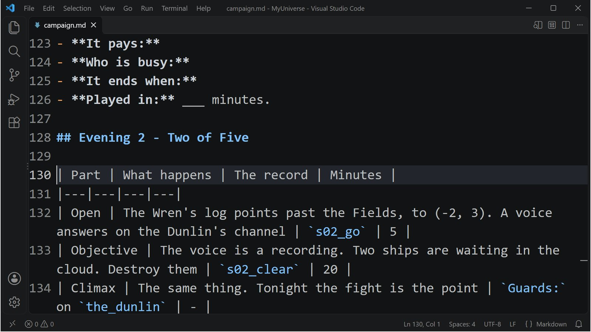

Class 6, Lecture 4 - The episode, your repeatable unit¶
What you will have at the end¶
A pattern for an evening that you can fill in like a form, and a second evening written from it. The crew follows the Wren's log to the Dunlin, finds she is bait, breaks the trap, and goes home to hear about a third boat.
Evening 1 took a lecture to build. Evening 2 takes a form with a dozen blanks and four short pieces of text. That is the difference between writing an evening and writing a campaign.

campaign.md at Evening 2: each part, and the record that carries it.You add a blank pattern and a second sheet to campaign.md. You add one landmark, change
one record, and add three records.
The video¶
About 5 minutes. Subtitles are available in the player.
Before you start¶
- Your
MyUniversemission as Lecture 3 left it.kestrel_verge.amdmatchesc6-03-designing-a-session\example\. sbs lint MyUniversesaysclean.- The game closed, and the save deleted:
C:\Cosmos\data\missions\common_data\saves\universe_save_the_kestrel_verge_1.yaml.
Words for this lecture:
| Word | Meaning |
|---|---|
| Pattern | An episode with blanks in it. This page also says template |
| Slot | One blank: a word you change every time |
| Unit | One filled-in pattern. One evening |
Step 1 - What Storm's Beacon learned about patterns¶
Its makers wrote a rule down before they wrote any episodes: adding an episode must be a few mechanical edits and no new thinking about how. Then they tested the rule by adding a third episode to a campaign that had two. It held, so they wrote the rest.
They wrote down a second rule later, the hard way. An episode is cheap. What makes one good is a small number of things built once and used every time: a way to put danger at a place, a way to put the place in cover, a voice that hands out the next lead. If you write ten episodes first and add those afterward, you rewrite ten episodes.
You already have your small number of things. Look at evening 1:
| The thing | Built once, in | Used by every episode as |
|---|---|---|
A lead that ends with reach |
Class 5 Lecture 3 | The open |
Then: reveal |
Class 5 Lecture 7 | The join between steps |
Guards: and Terrain: on a landmark |
Class 5 Lecture 5 | The climax |
| A step that ends at home and pays | Lecture 3 of this class | The end of the evening |
| The next lead, revealed at home | Lecture 3 of this class | The hook |
So today is not about anything new. It is about writing down what stays the same.
Step 2 - The pattern¶
Here is evening 1 with every word that belongs only to evening 1 taken out. The slots are in capital letters.
### [PLACE NAME](PLACE_KEY)
---
At: X, Y
Prefab: derelict
Terrain: COVER
Guards: SHIPS
---
ONE LINE THE CREW IS TOLD ON ARRIVAL.
### [The Long Count: OPEN TITLE](sNN_go)
---
Scope: shared
Starts when: revealed
Done when: reach X, Y
Then: reveal sNN_DEED
---
WHAT WAS FOUND LAST WEEK. WHERE TO GO.
WHAT IS STRANGE ABOUT IT.
## The count so far
| Boat | Where | What we know |
|---|---|---|
| BOAT | (X, Y) | WHAT WE KNOW |
### [The Long Count: OBJECTIVE TITLE](sNN_DEED)
---
Scope: shared
Starts when: revealed
Done when: ENDING
Then: reveal sNN_home
---
WHAT IS HERE. WHAT TO DO ABOUT IT.
### [The Long Count: HOME TITLE](sNN_home)
---
Scope: shared
Starts when: revealed
Done when: reach 0, 0
Then: reveal sMM_go
Reward: PAY credits
---
WHAT THE CREW NOW KNOWS. TAKE IT HOME.
| Slot | What goes in it |
|---|---|
NN |
The evening's number, two digits: 02 |
MM |
The next evening's number: 03 |
X, Y |
The system. The same two numbers in the landmark and in the open |
PLACE NAME, PLACE_KEY |
The landmark's name, and a key for it |
COVER |
nebula or asteroids. Or leave the line out |
SHIPS |
One of the six kinds of ship. Or leave the line out |
DEED |
A word for what the crew does: scan, clear, ask |
ENDING |
What finishes the objective. See the table below |
PAY |
The evening's wage |
BOAT, WHAT WE KNOW |
The count so far. Copy the table from the open before this one, and add a row for the boat this open sends the crew to |
| The four titles and the four texts | Yours |
The four endings an objective can have with what you know today:
Done when: |
The evening is about | Who is busy |
|---|---|---|
scan 1 derelict |
Finding something out | Science |
destroy 2 enemies |
A fight the crew cannot walk away from | Weapons, Engineering |
signal WORD |
A conversation. An answer in a hail sends the word | Comms |
reach X, Y |
Getting somewhere else, further on | Helm |
signal needs a hail to send it. Lecture 7 writes one. scan and destroy need nothing
but the landmark.
The very first open of a campaign says Starts when: at once. Every later one says
revealed, because last week's home step reveals it.
Put the pattern in campaign.md, under a heading of its own, so it is there when you
want it. Put the sheet's blank table beside it. Both are in
example\campaign.md.
Step 3 - Evening 2 from the pattern¶
First the sheet, in campaign.md:
## Evening 2 - Two of Five
| Part | What happens | The record | Minutes |
|---|---|---|---|
| Open | The Wren's log points past the Fields, to (-2, 3). A voice answers on the Dunlin's channel | `s02_go` | 5 |
| Objective | The voice is a recording. Two ships are waiting in the cloud. Destroy them | `s02_clear` | 20 |
| Climax | The same thing. Tonight the fight is the point | `Guards:` on `the_dunlin` | - |
| Hook | Home. The Dunlin was empty and stocked. The Deepwell sold a third boat | `s02_home`, then `s03_go` | 5 |
- **The crew learns:** nobody starved in the boats. They were taken off.
- **It pays:** 350 credits, at home.
- **Who is busy:** Weapons and Engineering. Science finds them in the cloud.
- **It ends when:** the ship is home and Three of Five is in the Quest Log.
- **Played in:** ___ minutes.
Now the records. The landmark goes in your Landmarks chapter, under The Wren.
### [The Dunlin](the_dunlin)
---
At: -2, 3
Prefab: derelict
Terrain: nebula
Guards: torgoth
---
The Tern's second boat, deep in cloud. The voice on her channel is a recording.
The open is already there. You wrote it last time, as the hook. Find
### [The Long Count: Two of Five](s02_go) and give it its Then: line.
### [The Long Count: Two of Five](s02_go)
---
Scope: shared
Starts when: revealed
Done when: reach -2, 3
Then: reveal s02_clear
---
The Wren's log gives the next boat's last bearing: (-2, 3), past the edge of the Fields. She was the Dunlin.
Somebody out there is still answering her hails.
## The count so far
| Boat | Where | What we know |
|---|---|---|
| The Wren | (2, 2) | Launched, and empty. Nine names in her log |
| The Dunlin | (-2, 3) | Something answers on her channel |
Under it, the objective, the way home, and next week's hook.
### [The Long Count: Bait](s02_clear)
---
Scope: shared
Starts when: revealed
Done when: destroy 2 enemies
Then: reveal s02_home
---
[](ship://torgoth_destroyer) Gleaner hulls, Torgoth-built. Two of them, in the cloud.
The Dunlin is a lure, and the ships in the cloud have been waiting for someone to answer. Break the trap.
### [The Long Count: Enter It Twice](s02_home)
---
Scope: shared
Starts when: revealed
Done when: reach 0, 0
Then: reveal s03_go
Reward: 350 credits
---
The Dunlin's seats were empty and her lockers were full. Nobody starved in her. Take that home to Kestrel Relay.
### [The Long Count: Three of Five](s03_go)
---
Scope: shared
Starts when: revealed
Done when: reach 3, 1
---
A boat does not empty itself. The Deepwell count every hull that is sold in the Verge.
Go to the Assay Office at (3, 1) and ask what they paid for a boat called the Plover.
## The count so far
| Boat | Where | What we know |
|---|---|---|
| The Wren | (2, 2) | Launched, and empty. Nine names in her log |
| The Dunlin | (-2, 3) | Empty, her lockers full. Her voice was a recording |
| The Plover | Sold | Ask the Deepwell who bought her |
That is the rhythm of the whole campaign. Each time you sit down, the open is already written, because it was last week's hook. You write a landmark, an objective, a way home, and the next hook. Three of Five carries the count forward: the table from Two of Five, with a row added for the Plover.
The fight shows the crew what they are fighting. Bait's text starts with a ship, the
way the Salvage Run arc did in Class 1 Lecture 11: [](ship://torgoth_destroyer) draws a
picture of a Torgoth hull at the top of the page, with the words beside it. The Gleaners fly
Torgoth. The name after ship:// must be a hull the game has, letter for letter, and
lint warns about one it does not know. Copy it exactly.
Two enemies, three ships. Measured: three ships guard the Dunlin, and the step asks for two. That is on purpose. A fight the crew must finish to the last ship is a fight that goes on five minutes after it stopped being interesting. Ask for fewer than you send.
The fight needs the guards. enemies means anything at war with the crew. At
(-2, 3) the game rolled nothing hostile of its own, so without the Guards: line there
is nothing to destroy, and the evening cannot be finished. An objective that ends with
destroy always gets a Guards: line on its landmark.
Step 4 - Check it¶
Save both files.
Each row below was made on purpose, one change to the finished files, then linted, then played.
Mistakes lint finds
| The mistake | What the game does | What lint says |
|---|---|---|
An evening copied and not renumbered: three more records with the keys s01_go, s01_scan, s01_home |
Keeps the first record with each key and drops the copies. Evenings 1 and 2 play as before. The copied evening is not there | A warning on each copy: "s01_go is the key of 2 records in the same place ... the game keeps the first and drops the rest" (duplicate-key), and one on each Then: that names such a key (ambiguous-reference) |
The last Then: points back at the evening's own open: Then: reveal s02_go on Enter It Twice |
Evening 2 ends, the reward is paid, and no new lead appears | A warning on Three of Five: "waits to be revealed, and nothing reveals it" (never-revealed) |
Mistakes lint cannot see
Lint says clean for every one of these.
| The mistake | What the game does |
|---|---|
No Guards: line on a landmark whose objective ends with destroy |
No hostile ship is there. Bait opens and can never be finished |
The number as a word: destroy two enemies |
Bait never finishes, however many ships are destroyed |
A side's name where enemies belongs: destroy 2 gleaners |
Bait never finishes. The guards belong to nobody, and the game looks for gleaner |
destroy 2 enemy, without the s, works. It was tried.
So check by eye: every objective that ends with destroy has a number in figures, the
word enemies, and a Guards: line on its landmark.
Step 5 - Play it¶
You do not have to play evening 1 again to reach evening 2, but the first time, do. It is the only way to feel the join.
- Play evening 1 as in Lecture 3, to the hook. Two of Five is open.
- Engage Two of Five. The card reads The Dunlin, then the warning that she is guarded. The Long Count: Bait is in the Quest Log.
- Destroy one ship. Bait is still open. Destroy a second. Bait shows
Done, and Enter It Twice is in the list. - Engage Enter It Twice. The ship is home, 350 credits are paid, and Three of Five is in the list.
- Open Charted Locations. It has The Wren and The Dunlin in it as well as home.
[Not seen in the real game: the fight itself. What was measured is that three ships of the raiders' side are there, that the game counts each one destroyed, and that the step is done at two.]
What you need to know about a pattern
| Fact | What it means for your story |
|---|---|
| On the spine, a step shows one next step | A Then: line can reveal two, with a comma: Then: reveal a, reveal b opened both when it was played. Keep the spine a single line all the same, so the crew always has one next thing to do. Lecture 6 shows how to hang something beside it |
| The open of each evening is the hook of the one before | You never write an evening from nothing. And you never write a hook without knowing what the next evening is |
| Every key must be new | Copy an evening and forget to renumber it, and the game keeps the first record with each key and drops your copy. Nothing breaks, and the new evening is not there |
| The pattern is yours to break | Three records is the ordinary evening. A tentpole can have five. An evening with nothing in it can have two |
If something goes wrong¶
| What you see | Likely cause |
|---|---|
| Evening 2 never begins | Enter It has no Then: reveal s02_go, or evening 2's open says at once and has been in the list all along |
| Bait never appears | Two of Five has no Then: line. You wrote it in Lecture 3 as a hook, with none |
| Bait never finishes | No Guards: line on The Dunlin, or the number after destroy is a word, or the last word is not enemies |
| The card at (-2, 3) does not read The Dunlin | The landmark's At: and the open's reach are not the same two numbers |
| A copied evening never happens | The copy kept its old keys. The game keeps the first record with a key and drops the rest. Lint names each one (duplicate-key). Renumber the copy |
Exercise¶
- Copy the pattern into your own
campaign.md, with your campaign's name in the titles. - Write the sheet for your evening 2. Choose a different ending for the objective from the one evening 1 has.
- Fill in the pattern. Count the words you changed.
- Write the hook for evening 3 before you stop. Then look at your tentpole table. Is evening 3 on the way to evening 10?
- Lint, and play both evenings in one sitting. Then delete the save, play evening 1 only, close the game, and play evening 2 the next day. Which join felt better?
Checkpoint¶
You are done when all five are true:
campaign.mdhas the blank pattern and a sheet for evening 2.sbs lint MyUniversesaysclean.- Evening 2's records have keys that begin
s02_, and none that begins01_. - Evening 2 ends at home with a reward and a lead for evening 3.
- You can say which words you would change to write evening 3.
Next¶
Lecture 5 lays out all twenty evenings as four acts, and counts what it will cost you to write them.
Further reading¶
- Class 5 Lecture 6, "Jobs":
destroy, and the wordenemies. - Class 5 Lecture 5, "The map": the six words
Guards:takes, andTerrain:. - Lecture 3 of this class: the evening this pattern was taken from.
Download this lecture's finished files (a zip of its example folder).